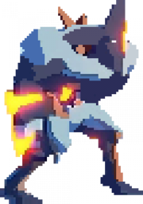
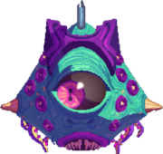
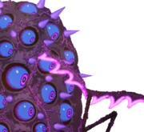
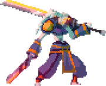
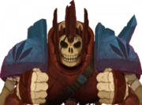
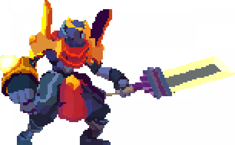
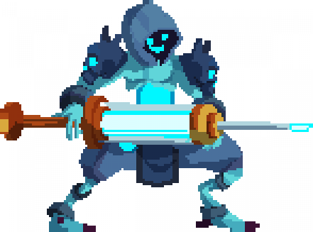

"Is this all I've got left? The false hope of a bunch of children's stories... Pathetic."
~ The Collector
~ The Collector
Dead Cells is a rogue-lite, Castlevania-inspired action-platformer, allowing you to explore a sprawling, ever-changing castle… assuming you’re able to fight your way past its keepers.
To beat the game, you’ll have to master 2D "souls-lite combat" with the ever-present threat of permadeath looming. No checkpoints. Kill, die, learn, repeat.
RogueVania: Intense 2D action with the adrenaline pumping threat of permadeath in a castle full of cuddly creatures.
Nonlinear progression: Unlock new levels with every death, take a new path. Tired of the stinking sewers? Why not take the ramparts?
Souls-lite combat: Pattern-based bosses and minions, weapons and spells with unique gameplay. Roll roll roll your boat gently down the stream...
Exploration: Secret rooms, hidden passages, charming landscapes. A fine place for a holiday.
Biomes are the different areas within Dead Cells which players must progress through.There are currently twenty-five biomes, with plans to add more.
Within each run, biomes are procedurally generated within the confines of that biome's set parameters. This puts the focus of gameplay on adaptation rather than memorization, while maintaining each biome's distinct feel. The order in which you'll encounter biomes, and the general location of their exits, are predetermined.
Excluding boss biomes, each biome always contains a shop and at least one treasure chest.
After exiting each biome, the player will enter the Collector's room. Here, they can turn in blueprints, spend cells, enter Timed and Perfect Doors if they met the requirements and replenish their health and health potions. Time spent in treasure chests, shops, lore rooms, and the Collector's room does not count towards Timed Doors. You will know if you are in one of these rooms if there is a [Pause] above the timer.
Biomes list (click to expand):
The Prisoners' Quarters is the only level one biome in the game. It is the starting point of every run.
A run-down stone dungeon with mossy bricks and prison cells visible in the background — most with broken bars. Torches line the walls. Decay is a reality for this prison, as any authority has long met their doom or fled. Some cells still house what prisoners were (un)lucky enough to have survived this long.
The Promenade of the Condemned is a second level biome.
This area is surrounded by a forest and utilizes a blueish colour pallet. Among the trees are numerous cages; Some broken, and others remain barely intact. Wooden buildings are built into the land, connecting to underground structures via elevator. The once tranquil and natural atmosphere of these woods has been banished by the horrific atrocities committed. No bird other than the black feathered crow flies here, feasting on the decaying bodies of the hanged... No prisoner would wish to be sent out here.
The Toxic Sewers is a second level biome.
The waters of these sewers are contaminated by a poisonous greenish substance that has oozed its way into the pipes. The pipes have decayed and have started rusting and cracking. Boxes of unknown origin litter these filthy tunnels, abandoned to rot. Bars cut off some of the area, with the occasional vocal occupant.
No prisoner has ever reached freedom through these sewers— the toxic atmosphere and revenants make sure of that.
The Dilapidated Arboretum is a second level biome that was introduced with the Bad Seed DLC.
Dappled light, soothing fountains and a fresh air brought the royals, aristocratic and various hangers-on to the gardens and serres of the arboretum to escape the hustle and bustle of the castle to have some moments of peace and relaxation. However, the fragrance of their perfumes had, unbeknownst to them, disturbed the local flora and fauna. Now the arboretum, a shadow of its former glory, attracted a different kind of visitor, who enjoyed the earthy smells of compost, spores and decay very, very much.
The Prison Depths is short, optional biome between the second and the third level.
It's accessed through the Promenade of the Condemned or the Dilapidated Arboretum using the Spider rune and leads to the Ossuary, the Morass of the Banished or the Ancient Sewers
Prison Depths is the only biome to contain two distinct soundtracks, namely "Prison Depths" and "Prison Theme". While "Prison Depths" was made exclusively for this biome, "Prison Theme" would have been for another biome called Prison Hub, but it was scrapped during the alpha stage of the game.
The Corrupted Prison is a short, optional biome between the second and the third level.
It's accessed through Toxic Sewers using the Spider rune and leads to the Ancient Sewers or the Ramparts.
Because v1.5, the Corrupted Update, decreased the amount of Cursed Chests, there is always a guaranteed one in the first room of this biome. To the right of the chest there is a door that will close behind the Beheaded, no matter if he had or hadn't inflicted the curse upon himself.
The Ramparts is a third level biome.
This series of towers lays high within the sky of the island, rising into the air. The glow of a beautiful sunset does not match the current state of these towers, sadly. After they no longer could hold the prisons, the guards retreated to the Ramparts. Now, however, the current state of disrepair is a telltale sign that this retreat did not work. When they still held these towers, sometimes prisoners would be thrown from the Ramparts, and the devices would be used for mindless torture. Even if one had made it through that horrible prison, or through the sewers and the yard, the climb would be the one to introduce them to their doom.
The Ancient Sewers is a third level biome.
One could believe that the sewers could not get worse than green. However, this deeper part of them is proof that it does get worse. Much, much, worse. An unusual filth gathers on the floor, the walls, the pipes, and the ceilings, hardening. The air is horrid, and would easily be a hazard for the lungs of many. Spiders have made their home among the crannies and cracks, and so has the slime mold. As well, all those undead bodies... All those rotting bones... They look appetizing for the hungry scavenging worms. And even the fungi has started to search for prey.
The Ossuary is a third level biome.
There's a point where even mass graves won't work to fit all the bodies. No, after the night of the bloody riots, they knew that they could not afford to dig massive holes. Instead, an entire section of the prison was decided to be the perfect place to host them. Then it was set ablaze, and the ashes spurted out. Bones and flesh now litter the floor, and bodies that are barely even recognizable as human litter the grounds. However, with so many bodies, even fire was not fast enough. Before it all could be burnt down, the bodies began to awaken, and the flesh started to move.
The Morass of the Banished is a third level biome that was introduced with the Bad Seed DLC.
The king has banished people from the castle and village. The leprous, diseased, and poor were sent away out of sight of the king and higher esteemed citizens of the kingdom. Having found themselves with no home in an extremely hostile environment, the banished became wild and savage, using violence to survive the horrors of the morass. They have made their homes high in the trees, safe from the ticks that live in the murky waters. But even so, sacrifice is needed to guarantee true safety.
The Black Bridge is the first boss biome in Dead Cells. It is a long bridge before the entrance to Stilt Village, where the Concierge guards the way.
The bridge separates the prison complex and the village. Darkness has set, and the full moon rises into the starry sky. A prisoner from the village would be excited to be so close to home… Yet so far. One cannot expect to be safe this soon. The prison warden remains valiant, even if he's not quite the same.
The Insufferable Crypt is the first boss biome along with Black Bridge and the Nest. The Crypt is a large room with a hallway on either side. There are four platforms: one near the ground in the middle of the room, two higher up on either side, and a fourth in the middle near the ceiling. The boss Conjunctivius is guarding this place.
Before the infectious Malaise made its debut, this former crypt was converted into a storage room. The old crypt had little need to be used, as there wasn't such an influx of bodies to bury. However, then people started dying. That's when she appeared. This... monstrosity had suddenly risen up from a pile of mutated rot and flesh. The guards needed to confine her somewhere, lest their lives be forfeit; thus, they chained her up, and here she remains, hungry.
The Nest is a first boss biome that was introduced with the Bad Seed DLC.
The Nest can only be accessed from the Morass of the Banished. Two exits are available after, leading to the Stilt Village or to the Graveyard.
The Stilt Village is a fourth level biome.
This is the main settlement of the island. Here, the villagers would live a simple life. They would dine of the salty sea, casting the bait and nets, hoping to catch something eatable. Then, everyone started dying from the Malaise. At first, they quietly mourned their family, and wondered what higher power had they bothered to deserve this... But then, the ground opened up like a mouth; Not to swallow, but to spit out the undead, undead to drag them back into the mouth. The stilt village is a former shell of itself, and the crows are as numerous as the fish once were.
The Graveyard is a fourth level biome.
This vast cemetery has been in use for generations, ever since the first man made his home here. Thousands of gravestones mark where the bones and ashes of the dead sleep, rising up into the air of the valley. However, this massive valley is now full, as the Malaise has provided many dead bodies to fill the space. No other pile of bones can fit here any longer. Now, the living dead occupy this space, stepping on the little ground that has no gravestone marking it.
The Slumbering Sanctuary is a fourth level biome.
This old sanctuary quietly slumbers, lit by the glow of the strange, sap-like substance oozing from its walls. Its halls are eerily quiet, and countless statues litter the grounds. There is no way out- that is, without awakening the sanctuary.
Nothing likes to be awakened from their slumber, and these halls are no exception. The pulsing hues of the Sanctuary warm from blue to orange, and statues come alive when approached. Proceed with caution, or be slain for your trespass.
The Clock Tower is a fifth level biome.
The clock tower rises above the Stilt Village, up into the clouds. The only thing it does not look down upon is the king's keep. It is a bit nauseating to climb, although bearable. Yet... There is something one will never get used to: Time. One can feel it looping, speeding up and slowing down at the same time. The purpose of this need for time adjustments is one known by few...
The Cavern is a fifth level biome that was introduced with the Rise of the Giant DLC.
It is located beyond the Graveyard and served as a crystal mine for the King. It contains a variety of unique enemies in a series of carved tunnels, with a greenish visual atmosphere. The layout of the Cavern is particular, as it contains narrow shafts, probably used by the miners to move around the area, as well as floating platforms and pools of lava. The Cavern is initially the only way to reach the Giant, who is located in the Guardian's Haven.
The Clock Room is the second boss biome. The Time Keeper is found here.
Here, The Time Keeper calibrates time, quitely overlooking the whole island from her perch. It is foolish to think one can contend with her, however. When she moves, it is at if she is cutting through time itself, as well as one's flesh.

The Guardian's Haven is a second boss biome that was introduced with the Rise of the Giant DLC. The Giant is found here.
The room consists of a chunk of land surrounded by lava. The room starts with a platform over the lava, but it vanishes after you enter the room and the boss fight starts.
The High Peak Castle is the last biome to traverse in order to face the final boss, one of two sixth level biomes in the game.
High Peak Castle used to be filled with visitors and guards, among the castle grounds for many purposes. However, as of everything below it, the Malaise has put a stop to all the normal activities. The last stand of the royal guard was among these grounds, but, as the current state reads, they did not make it through. While the grand statue of The King still stands, the paintings as beautiful as ever, and the hallways still quite grand, High Peak Castle has fallen from grace.
The Derelict Distillery is a sixth level biome that can only be accessed after reaching the Throne Room for the first time.
The Distillery is an abandoned warehouse that was once used to produce liquor before being converted into a gunpowder factory. The rooms and hallways are filled with stacks of barrels and giant bottles, which can be assumed to contain alcohol, that are hanging by chains from the ceilings. Large machines can be seen in the background, their function unknown. The walls themselves often appear to be covered in pipes and electronic devices that were once used to keep the distillery operational, but now many walls have been visibly damaged by blasts from the explosive barrels found throughout the facility.
The Throne Room is the room where the King of the island resides. It is guarded by the final boss of Dead Cells, The Hand of the King.
This room has a strange, enchanted beauty to it. While decay of the island is fully visible below, one may find a calm and serene beauty in it all. The beautiful starry sky is visible, and a fountain slowly pours its heart out. The main feature, of course, is the throne, with the King silently sitting... Dead silent. Just before him watches the Hand of the King, ever vigilant. In your time of appreciating the beauty, he has spotted you... And you're an intruder.
The Astrolab is a special level accessible after the Throne Room only when playing with 5 Boss Stem Cells active.
The Astrolab is the main laboratory used by the Alchemist for his experiments with curing the Malaise. This biome is particular in that it consists of a succession of floating platforms and structures with ladders connecting them, which the Beheaded must climb to reach the exit leading to the Observatory. If the player falls in the gap between platforms, they drop down far below and take a lot of damage thanks to the extreme enemy level scaling in this biome.
The Observatory is the lair of the Collector, who is the hidden true last boss of the game. This level can only be reached when playing with 5 Boss Stem Cells active and reveals the true ending of the story.
When the Beheaded reaches this biome, the Collector reveals his plans to create the panacea, a fabled cure to all diseases, using all the cells collected by the Beheaded. He asks the Beheaded to deposit them in the Catalyst next to him. Although the Collector doesn't believe the legends passed down by the first Alchemists of the island, he attempts this experiment in a last-ditch effort to cure the Malaise and save the island as well as himself. It turns out it drives him mad with power. Thus, the Collector tells the Beheaded to go back and gather more cells, which triggers the fight.
There are currently seven bosses in the game: The Concierge, Conjunctivius, The Time Keeper, The Giant, The Hand of the King, a 5 Boss Stem Cells exclusive boss, and Mama Tick, which is only available with the Bad Seed DLC. (Hover mouse over image to see details)

The first boss encountered in the game. Requires Vine Rune. Can be reached either through the Ramparts or the Ossuary.

She is reached by going through the Toxic Sewers, then the Ancient Sewers, to the Insufferable Crypt.

She can be reached with the Bad Seed DLC. It is only accessible by going through the Morass of the Banished and traveling to the Nest.

Found in the Clock Room. Can be reached through either the Clock Tower or the Forgotten Sepulcher.

Unlocked by opening the gate to the Cavern in the Graveyard (requires Cavern Key).Found in the Guardian's Haven. Can be reached through either the Cavern or the Forgotten Sepulcher.

The final boss of the game on 4 Boss Stem Cells and less. Found in the Throne Room. He is reached through High Peak Castle, Derelict Distillery, or Guardian's Haven.

The true final boss of the game. Found in the Observatory, which can only be reached with 5 Boss Stem Cells active, after the Throne Room and the Astrolab. Requires the Rise of the Giant DLC.
The Beheaded
The Beheaded, also known as The Prisoner or the Fallen One, is the protagonist of Dead Cells. It appears to be a mysterious shadowy, gas-like substance, with a glowing crystal inside. The Beheaded prefers to possess headless bodies instead of moving around without one.
Runes
Runes are permanent upgrades which enable the player to travel to locations and Biomes which are not accessible otherwise.
Timed Doors
Timed doors appear in few transition levels (levels that are in-between two biomes). If a timed door is not reached and opened within a set amount of time in a run, it will be locked and unopenable.
Perfect Doors
Perfect Doors appear in most transition levels (levels that are inbetween two biomes), sometimes even alongside Timed Doors. There are 2 types of Perfect Doors.
The first type is in transition levels after a biome and requires you to reach a set amount of kills in a row (30 or 60) without getting hit. Even if you get hit before the start or after the end of your kill streak, the door will still be open.
The second type is located in transition levels after bosses, and requires you to defeat the boss without being hit once.
Boss Stem Cell
Boss Stem Cells (or simply Boss Cells) are permanent items that increase the difficulty of the game when active. The first one is acquired by beating the Hand of the King with no Boss Stem Cells active, the second by beating him with one active, and so on. However, the fifth Boss Stem Cell is obtained by beating the Giant with four active.
Dead cells was developed by Motion Twin but in August 2019 it was taken over by a new team named Evil Empire so Motion twin could focus on new projects.
Development of the mobile version is handled by an outside studio, Playdigious, and is several updates behind.
Content of this site does not belong to me. It was copied for educational purposes from these sites:
https://deadcells.gamepedia.com/Dead_Cells_Wiki
https://dead-cells.com/